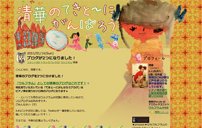
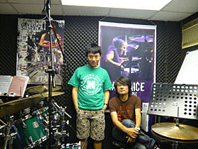

Webサイト制作（コーディング）をやります。
Rock系バンドでドラムをプレイします。
Webサイト制作（コーディング）をやります。
Rock系バンドでドラムをプレイします。
Aurized Studio（オーライズド スタジオ）は、フリーランスの須崎 武 (Takeshi Suzaki) が都内を中心に活動、運営している個人事務所です。KillBurN（キルバーン）の名前で活動することもあります。（ドラム関係）
Webコーディング(PC、スマホ、携帯ガラケーサイト)を得意としています。
官公庁サイト（アクセシビリティ対応含む）、大手企業サイト等のコーディング経験もございます。IE6〜の案件対応可能です。
個人、小企業様向けにWebデザインも対応します。
粘り強い作業を、そしてお客さんと永く付き合える制作者を目指しています。
スケジュール等、条件次第で短期常駐案件対応します。Web制作会社さん向けにGit、Sass対応します。
都内DTP/Web制作会社にて5年程の制作経験を経て、2010年2月12日 Aurized Studio(オーライズド スタジオ)として開業。フリーランスとして活動を始めました。
１時間あたり ¥2,060 で作業しています。（ページ単位での見積もりはしておりません）
Rock系でヘビーな感じのプレイを必要としているバンドに一番合うと思います。バンドの曲に合わせてアレンジして叩きます。ライブやレコーディング等。カホンも対応します。
セッション、ジャム等はやりません（できません）。
1996年からMI PITにて1年半ほどドラムの基礎やスピリッツを学び、以来バンドやサポートなどをやっています。
ポートフォリオはカルーセルパネル（スライダー）を使用して紹介しています。

PCサイト(ブログ)。
デザイン、コーディング、MovableType使用。
上記はデザイン込みの実績ですが、コーディング実績としてはその他官公庁、金融系、企業サイトなどもございますので、詳細は以下に
お問い合わせください。
GitHubでもレスポンシブサイト等のコーディング実績を紹介しています。
GitHub
閲覧ブラウザによってはムービーが表示されないかもしれません。YouTubeにも一部アップしています。
または、
メール info[at]aurized-studio.jp ([at] -> @に変換してください)からお問い合わせください。

香港にてプライベートドラムスクール、貸スタジオ(ドラマー用)、レコーディング(ドラマー用)をやっている DRUMS.THE RHYTHM OF LIFE の紹介です。MI PITの同窓生 SAU がやっている香港では数少ないドラマーのための音楽教室（スタジオ）です。
DRUMS.THE RHYTHM OF LIFE is private drum school by SAU in H.K. He is a professional drummer, drum instructor, graduated from the world famous Musicians Institute (PIT) in Hollywood.
ご興味ある方は以下に
お問い合わせください。
（Google+に投稿した参考記事から最新５件を以下に表示しています）
本サイトは、2010年8月20日に改正されたJIS X 8341-3:2010「高齢者・障害者等配慮設計指針－情報通信における機器，ソフトウェア及びサービス－第3部：ウェブコンテンツ」に基づき、JIS X 8341-3:2010の等級AAに準拠(※)することを目標にします。
(※)本サイトのウェブアクセシビリティ方針における「JIS X 8341-3:2010 に準拠する」という表記は、情報通信アクセス協議会ウェブアクセシビリティ基盤委員会「ウェブコンテンツのJIS X 8341-3:2010 対応度表記ガイドライン 第1版 - 2010年8月20日」で定められた表記によります。(URI http://waic.jp/docs/jis2010-compliance-guidelines/index.html)
オーライズドスタジオ ホームページ (http://aurized-studio.jp/index.html)
JIS X 8341-3:2010の等級AAに準拠
なし
HTML5,CSS2,CSS3,JavaScript
2015年5月4日
| 等級 | 細分箇条 | 達成基準 | 適用 | 適合 | 備考 |
|---|---|---|---|---|---|
| A | 7.1.1.1 | 非テキストコンテンツ | ○ | ○ | |
| A | 7.1.2.1 | 収録済みの音声しか含まないメディア及び収録済みの映像しか含まないメディア | − | ○ | 該当コンテンツなし |
| A | 7.1.2.2 | 収録済みの音声コンテンツのキャプション | − | ○ | 該当コンテンツなし |
| A | 7.1.2.3 | 収録済みの映像コンテンツの代替コンテンツ又は音声ガイド | ○ | ○ | |
| AA | 7.1.2.4 | ライブの音声コンテンツのキャプション | − | ○ | 該当コンテンツなし |
| AA | 7.1.2.5 | 収録済みの映像コンテンツの音声ガイド | ○ | ○ | 映像トラックにある情報のすべてが音声トラックですでに提供されているので音声ガイドは入れません |
| A | 7.1.3.1 | 情報及び関係性 | ○ | ○ | |
| A | 7.1.3.2 | 意味のある順序 | ○ | ○ | |
| A | 7.1.3.3 | 感覚的な特徴 | ○ | ○ | |
| A | 7.1.4.1 | 色の使用 | ○ | ○ | |
| A | 7.1.4.2 | 音声制御 | − | ○ | 該当コンテンツなし |
| AA | 7.1.4.3 | 最低限のコントラスト | ○ | ○ | |
| AA | 7.1.4.4 | テキストのサイズ変更 | ○ | ○ | |
| AA | 7.1.4.5 | 画像化された文字 | ○ | ○ | |
| A | 7.2.1.1 | キーボード操作 | ○ | ○ | |
| A | 7.2.1.2 | フォーカス移動 | ○ | ○ | |
| A | 7.2.2.1 | 調整可能な制限時間 | − | ○ | 該当コンテンツなし |
| A | 7.2.2.2 | 一時停止、停止及び非表示 | − | ○ | 該当コンテンツなし |
| AAA | 7.2.2.3 | 制限時間なし | − | ○ | 該当コンテンツなし |
| A | 7.2.3.1 | 3回の閃光又は閾値以下 | − | ○ | 該当コンテンツなし |
| AAA | 7.2.3.2 | 3回の閃光 | − | ○ | 該当コンテンツなし |
| A | 7.2.4.1 | ブロック・スキップ | ○ | ○ | |
| A | 7.2.4.2 | ページタイトル | ○ | ○ | |
| A | 7.2.4.3 | フォーカス順序 | ○ | ○ | |
| A | 7.2.4.4 | 文脈におけるリンクの目的 | ○ | ○ | |
| AA | 7.2.4.5 | 複数の到達手段 | ○ | ○ | |
| AA | 7.2.4.6 | 見出し及びラベル | ○ | ○ | |
| AA | 7.2.4.7 | 視覚的に認識可能なフォーカス | ○ | ○ | |
| AAA | 7.2.4.8 | 現在位置 | − | ○ | 該当コンテンツなし |
| AAA | 7.2.4.9 | リンクの目的 | ○ | ○ | |
| AAA | 7.2.4.10 | セクション見出し | ○ | ○ | |
| A | 7.3.1.1 | ページの言語 | ○ | ○ | |
| AA | 7.3.1.2 | 部分的に用いられている言語 | ○ | ○ | |
| A | 7.3.2.1 | オンフォーカス | ○ | ○ | |
| A | 7.3.2.2 | ユーザインタフェースコンポーネントによる状況の変化 | − | ○ | 該当コンテンツなし |
| AA | 7.3.2.3 | 一貫したナビゲーション | ○ | ○ | |
| AA | 7.3.2.4 | 一貫した識別性 | ○ | ○ | |
| A | 7.3.3.1 | 入力エラー箇所の特定 | − | ○ | 該当コンテンツなし |
| A | 7.3.3.2 | ラベル又は説明文 | − | ○ | 該当コンテンツなし |
| AA | 7.3.3.3 | 入力エラー修正方法の提示 | − | ○ | 該当コンテンツなし |
| AA | 7.3.3.4 | 法的義務、金銭的取引、データ変更及び回答送信のエラー回避 | − | ○ | 該当コンテンツなし |
| A | 7.4.1.1 | 構文解析 | ○ | ○ | アクセシビリティを優先して、<table>要素にsummary属性を入れています |
| A | 7.4.1.2 | プログラムが解釈可能な識別名、役割及び設定可能な値 | ○ | ○ |